Lecture 15: Class demo#
Let’s cluster images!!#
For this demo, I’m going to use the following image dataset:
A tiny subset of Food-101 from last lecture (available here).
A small subset of Human Faces dataset (available here).
To run the code below, you need to install pytorch and torchvision in the course conda environment.
conda install pytorch torchvision -c pytorch
import numpy as np
import pandas as pd
import os
import torch
from torchvision import datasets, models, transforms, utils
from PIL import Image
from torchvision import transforms
from torchvision.models import vgg16
import matplotlib.pyplot as plt
import torchvision
Let’s start with small subset of birds dataset. You can experiment with a bigger dataset if you like.
device = torch.device("cuda:0" if torch.cuda.is_available() else "cpu")
def set_seed(seed=42):
torch.manual_seed(seed)
np.random.seed(seed)
random.seed(seed)
set_seed(seed=42)
---------------------------------------------------------------------------
NameError Traceback (most recent call last)
Cell In[5], line 1
----> 1 set_seed(seed=42)
Cell In[4], line 4, in set_seed(seed)
2 torch.manual_seed(seed)
3 np.random.seed(seed)
----> 4 random.seed(seed)
NameError: name 'random' is not defined
import glob
IMAGE_SIZE = 200
def read_img_dataset(data_dir):
data_transforms = transforms.Compose(
[
transforms.Resize((IMAGE_SIZE, IMAGE_SIZE)),
transforms.ToTensor(),
transforms.Normalize([0.5, 0.5, 0.5], [0.5, 0.5, 0.5]),
])
image_dataset = datasets.ImageFolder(root=data_dir, transform=data_transforms)
dataloader = torch.utils.data.DataLoader(
image_dataset, batch_size=BATCH_SIZE, shuffle=True, num_workers=0
)
dataset_size = len(image_dataset)
class_names = image_dataset.classes
inputs, classes = next(iter(dataloader))
return inputs, classes
def plot_sample_imgs(inputs):
plt.figure(figsize=(10, 70)); plt.axis("off"); plt.title("Sample Training Images")
plt.imshow(np.transpose(utils.make_grid(inputs, padding=1, normalize=True),(1, 2, 0)));
def get_features(model, inputs):
"""Extract output of densenet model"""
with torch.no_grad(): # turn off computational graph stuff
Z_train = torch.empty((0, 1024)) # Initialize empty tensors
y_train = torch.empty((0))
Z_train = torch.cat((Z_train, model(inputs)), dim=0)
return Z_train.detach()
densenet = models.densenet121(weights="DenseNet121_Weights.IMAGENET1K_V1")
densenet.classifier = torch.nn.Identity() # remove that last "classification" layer
data_dir = "data/food"
file_names = [image_file for image_file in glob.glob(data_dir + "/*/*.jpg")]
n_images = len(file_names)
BATCH_SIZE = n_images # because our dataset is quite small
food_inputs, food_classes = read_img_dataset(data_dir)
n_images
350
X_food = food_inputs.numpy()
plot_sample_imgs(food_inputs[0:24,:,:,:])
Z_food = get_features(
densenet, food_inputs,
)
Z_food = Z_food.numpy()
Z_food.shape
(350, 1024)
from sklearn.cluster import KMeans
k = 7
km = KMeans(n_clusters=k, n_init='auto', random_state=123)
km.fit(Z_food)
KMeans(n_clusters=7, n_init='auto', random_state=123)In a Jupyter environment, please rerun this cell to show the HTML representation or trust the notebook.
On GitHub, the HTML representation is unable to render, please try loading this page with nbviewer.org.
KMeans(n_clusters=7, n_init='auto', random_state=123)
for cluster in range(k):
get_cluster_images(km, Z_food, X_food, cluster, n_img=6)
Image indices: [329 60 322 0 236 235]
Image indices: [315 204 176 253 83 167]
Image indices: [ 51 23 306 298 161 24]
Image indices: [139 41 185 26 61 4]
Image indices: [111 94 65 101 230 90]
Image indices: [206 14 280 273 11 314]
Image indices: [169 163 341 159 125 50]
Let’s try DBSCAN.
dbscan = DBSCAN()
labels = dbscan.fit_predict(Z_food)
print("Unique labels: {}".format(np.unique(labels)))
Unique labels: [-1]
It identified all points as noise points. Let’s explore the distances between points.
from sklearn.metrics.pairwise import euclidean_distances
dists = euclidean_distances(Z_food)
np.fill_diagonal(dists, np.inf)
dists_df = pd.DataFrame(dists)
dists_df
| 0 | 1 | 2 | 3 | 4 | 5 | 6 | 7 | 8 | 9 | ... | 340 | 341 | 342 | 343 | 344 | 345 | 346 | 347 | 348 | 349 | |
|---|---|---|---|---|---|---|---|---|---|---|---|---|---|---|---|---|---|---|---|---|---|
| 0 | inf | 32.147507 | 27.293831 | 27.228497 | 28.002232 | 25.899265 | 28.408920 | 27.280912 | 27.052334 | 29.723883 | ... | 30.619820 | 26.685843 | 27.280912 | 28.299599 | 26.645281 | 29.363770 | 25.194073 | 29.676983 | 25.055792 | 28.578655 |
| 1 | 32.147507 | inf | 28.417624 | 29.153109 | 29.487787 | 27.944752 | 33.295006 | 30.007055 | 28.700245 | 31.242245 | ... | 32.983677 | 25.921301 | 30.007055 | 27.803499 | 27.711092 | 23.072115 | 28.968361 | 28.748524 | 30.015015 | 29.989883 |
| 2 | 27.293831 | 28.417624 | inf | 25.105978 | 26.080637 | 23.332731 | 29.075375 | 23.967255 | 24.418520 | 27.964073 | ... | 29.649349 | 23.770691 | 23.967255 | 24.438934 | 23.309681 | 27.047318 | 23.099041 | 28.084009 | 24.450035 | 26.737730 |
| 3 | 27.228497 | 29.153109 | 25.105978 | inf | 26.403458 | 24.154203 | 29.044271 | 25.256765 | 24.477415 | 30.358431 | ... | 30.267469 | 25.320311 | 25.256765 | 26.022858 | 25.235279 | 24.920464 | 24.401587 | 28.650534 | 24.779493 | 28.330040 |
| 4 | 28.002232 | 29.487787 | 26.080637 | 26.403458 | inf | 26.376062 | 29.740612 | 23.752069 | 27.671799 | 29.673315 | ... | 29.915533 | 26.918478 | 23.752069 | 28.714851 | 21.844633 | 28.958271 | 25.997410 | 29.331301 | 26.072651 | 27.712309 |
| ... | ... | ... | ... | ... | ... | ... | ... | ... | ... | ... | ... | ... | ... | ... | ... | ... | ... | ... | ... | ... | ... |
| 345 | 29.363770 | 23.072115 | 27.047318 | 24.920464 | 28.958271 | 25.537451 | 30.930262 | 27.877060 | 26.664751 | 30.233982 | ... | 32.033962 | 22.248459 | 27.877060 | 26.538082 | 26.385565 | inf | 26.398273 | 26.667959 | 28.297689 | 29.880806 |
| 346 | 25.194073 | 28.968361 | 23.099041 | 24.401587 | 25.997410 | 23.918730 | 28.036942 | 24.335499 | 23.950077 | 29.108568 | ... | 30.474297 | 22.630152 | 24.335499 | 25.289833 | 23.234587 | 26.398273 | inf | 27.363422 | 23.769556 | 26.326014 |
| 347 | 29.676983 | 28.748524 | 28.084009 | 28.650534 | 29.331301 | 26.841032 | 30.766617 | 27.668751 | 28.311584 | 31.257399 | ... | 31.201294 | 23.483141 | 27.668751 | 28.502274 | 28.211889 | 26.667959 | 27.363422 | inf | 26.248280 | 29.626690 |
| 348 | 25.055792 | 30.015015 | 24.450035 | 24.779493 | 26.072651 | 24.271902 | 28.861692 | 25.313517 | 25.136566 | 29.360746 | ... | 30.514103 | 24.522303 | 25.313517 | 25.476812 | 24.582825 | 28.297689 | 23.769556 | 26.248280 | inf | 26.861782 |
| 349 | 28.578655 | 29.989883 | 26.737730 | 28.330040 | 27.712309 | 26.029510 | 30.483013 | 26.569021 | 28.320126 | 30.227654 | ... | 30.936708 | 26.853268 | 26.569021 | 28.326153 | 26.244240 | 29.880806 | 26.326014 | 29.626690 | 26.861782 | inf |
350 rows × 350 columns
dists.min(), np.nanmax(dists[dists != np.inf]), np.mean(dists[dists != np.inf])
(0.0, 39.980446, 27.851997)
for eps in range(16, 30):
print("\neps={}".format(eps))
dbscan = DBSCAN(eps=eps, min_samples=3)
labels = dbscan.fit_predict(Z_food)
print("Number of clusters: {}".format(len(np.unique(labels))))
print("Cluster sizes: {}".format(np.bincount(labels + 1)))
eps=16
Number of clusters: 1
Cluster sizes: [350]
eps=17
Number of clusters: 3
Cluster sizes: [342 5 3]
eps=18
Number of clusters: 4
Cluster sizes: [331 3 13 3]
eps=19
Number of clusters: 2
Cluster sizes: [309 41]
eps=20
Number of clusters: 4
Cluster sizes: [275 69 3 3]
eps=21
Number of clusters: 4
Cluster sizes: [230 114 3 3]
eps=22
Number of clusters: 2
Cluster sizes: [181 169]
eps=23
Number of clusters: 2
Cluster sizes: [131 219]
eps=24
Number of clusters: 2
Cluster sizes: [ 81 269]
eps=25
Number of clusters: 2
Cluster sizes: [ 53 297]
eps=26
Number of clusters: 2
Cluster sizes: [ 29 321]
eps=27
Number of clusters: 2
Cluster sizes: [ 17 333]
eps=28
Number of clusters: 2
Cluster sizes: [ 4 346]
eps=29
Number of clusters: 2
Cluster sizes: [ 1 349]
dbscan = DBSCAN(eps=18, min_samples=3)
dbscan_labels = dbscan.fit_predict(Z_food)
print("Number of clusters: {}".format(len(np.unique(dbscan_labels))))
print("Cluster sizes: {}".format(np.bincount(dbscan_labels + 1)))
print("Unique labels: {}".format(np.unique(dbscan_labels)))
Number of clusters: 4
Cluster sizes: [331 3 13 3]
Unique labels: [-1 0 1 2]
print_dbscan_clusters(Z_food, food_inputs, dbscan_labels)
Let’s examine noise points identified by DBSCAN.
print_dbscan_noise_images(Z_food, food_inputs, dbscan_labels)
Now let’s try another dataset with human faces, a small subset of Human Faces dataset (available here).
data_dir = "data/test"
file_names = [image_file for image_file in glob.glob(data_dir + "/*/*.jpg")]
n_images = len(file_names)
BATCH_SIZE = n_images # because our dataset is quite small
faces_inputs, classes = read_img_dataset(data_dir)
X_faces = faces_inputs.numpy()
X_faces.shape
(367, 3, 200, 200)
plot_sample_imgs(faces_inputs[0:24,:,:,:])
Z_faces = get_features(
densenet, faces_inputs,
).numpy()
Z_faces.shape
(367, 1024)
from sklearn.cluster import KMeans
k = 7
km = KMeans(n_clusters=k, n_init='auto', random_state=123)
km.fit(Z_faces)
KMeans(n_clusters=7, n_init='auto', random_state=123)In a Jupyter environment, please rerun this cell to show the HTML representation or trust the notebook.
On GitHub, the HTML representation is unable to render, please try loading this page with nbviewer.org.
KMeans(n_clusters=7, n_init='auto', random_state=123)
km.cluster_centers_.shape
(7, 1024)
for cluster in range(k):
get_cluster_images(km, Z_faces, X_faces, cluster, n_img=6)
Image indices: [331 288 365 41 301 163]
Image indices: [104 325 54 279 324 76]
Image indices: [312 260 253 60 68 103]
Image indices: [218 256 1 75 39 117]
Image indices: [124 87 32 213 126 193]
Image indices: [134 290 146 139 2 137]
Image indices: [217 175 251 58 38 240]
Clustering faces with DBSCAN#
dbscan = DBSCAN()
labels = dbscan.fit_predict(Z_faces)
print("Unique labels: {}".format(np.unique(labels)))
Unique labels: [-1]
dists = euclidean_distances(Z_faces)
np.fill_diagonal(dists, np.inf)
dist_df = pd.DataFrame(
dists
)
dist_df.iloc[10:20, 10:20]
| 10 | 11 | 12 | 13 | 14 | 15 | 16 | 17 | 18 | 19 | |
|---|---|---|---|---|---|---|---|---|---|---|
| 10 | inf | 22.202929 | 29.026991 | 24.808342 | 21.978931 | 24.947178 | 28.091995 | 30.958427 | 27.249847 | 27.493883 |
| 11 | 22.202929 | inf | 27.759134 | 22.445309 | 19.480604 | 26.359818 | 26.749269 | 31.003994 | 27.764196 | 27.993914 |
| 12 | 29.026991 | 27.759134 | inf | 27.697313 | 28.461094 | 27.779404 | 26.923357 | 29.524551 | 29.882502 | 25.790760 |
| 13 | 24.808342 | 22.445309 | 27.697313 | inf | 22.186646 | 24.881973 | 25.663059 | 29.471386 | 27.232708 | 26.758585 |
| 14 | 21.978931 | 19.480604 | 28.461094 | 22.186646 | inf | 25.943062 | 27.916592 | 29.635603 | 28.413771 | 27.993795 |
| 15 | 24.947178 | 26.359818 | 27.779404 | 24.881973 | 25.943062 | inf | 27.601255 | 26.791264 | 28.904617 | 26.097111 |
| 16 | 28.091995 | 26.749269 | 26.923357 | 25.663059 | 27.916592 | 27.601255 | inf | 29.306686 | 28.942295 | 26.934277 |
| 17 | 30.958427 | 31.003994 | 29.524551 | 29.471386 | 29.635603 | 26.791264 | 29.306686 | inf | 33.235977 | 29.950184 |
| 18 | 27.249847 | 27.764196 | 29.882502 | 27.232708 | 28.413771 | 28.904617 | 28.942295 | 33.235977 | inf | 29.398325 |
| 19 | 27.493883 | 27.993914 | 25.790760 | 26.758585 | 27.993795 | 26.097111 | 26.934277 | 29.950184 | 29.398325 | inf |
dists.min(), np.nanmax(dists[dists != np.inf]), np.mean(dists[dists != np.inf])
(0.0, 36.339535, 25.942497)
for eps in [16, 17, 18, 19, 20, 21, 22, 24]:
print("\neps={}".format(eps))
dbscan = DBSCAN(eps=eps, min_samples=3)
labels = dbscan.fit_predict(Z_faces)
print("Number of clusters: {}".format(len(np.unique(labels))))
print("Cluster sizes: {}".format(np.bincount(labels + 1)))
eps=16
Number of clusters: 8
Cluster sizes: [345 3 3 3 3 4 3 3]
eps=17
Number of clusters: 12
Cluster sizes: [322 4 3 3 3 3 6 5 8 4 3 3]
eps=18
Number of clusters: 11
Cluster sizes: [305 30 3 3 3 3 7 3 4 3 3]
eps=19
Number of clusters: 9
Cluster sizes: [262 82 3 3 4 4 3 3 3]
eps=20
Number of clusters: 7
Cluster sizes: [211 140 3 4 3 3 3]
eps=21
Number of clusters: 5
Cluster sizes: [157 199 3 5 3]
eps=22
Number of clusters: 4
Cluster sizes: [102 259 3 3]
eps=24
Number of clusters: 2
Cluster sizes: [ 25 342]
dbscan = DBSCAN(eps=17, min_samples=3)
dbscan_labels = dbscan.fit_predict(Z_faces)
print("Number of clusters: {}".format(len(np.unique(dbscan_labels))))
print("Cluster sizes: {}".format(np.bincount(dbscan_labels + 1)))
print("Unique labels: {}".format(np.unique(dbscan_labels)))
Number of clusters: 12
Cluster sizes: [322 4 3 3 3 3 6 5 8 4 3 3]
Unique labels: [-1 0 1 2 3 4 5 6 7 8 9 10]
print_dbscan_clusters(Z_faces, faces_inputs, dbscan_labels)
Let’s examine noise images identified by DBSCAN.
print_dbscan_noise_images(Z, faces_inputs, dbscan_labels)
We can guess why these images are noise images. There are odd angles, cropping, sun glasses, hands near faces etc.
Hierarchical clustering#
set_seed(seed=42)
plt.figure(figsize=(20, 15))
Z_hrch = ward(Z_faces)
dendrogram(Z_hrch, p=7, truncate_mode="level", no_labels=True)
plt.xlabel("Sample index")
plt.ylabel("Cluster distance");
cluster_labels = fcluster(Z_hrch, 30, criterion="maxclust") # let's get flat clusters
#hand_picked_clusters = np.arange(2, 30)
hand_picked_clusters = [2, 3, 5, 6,7, 8, 9, 10, 12, 14,15,16,17,19,20, 21,22, 24, 26, 27, 28]
print_hierarchical_clusters(
faces_inputs, Z_faces, cluster_labels, hand_picked_clusters
)
 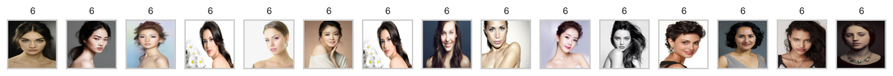
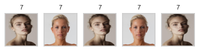
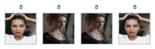
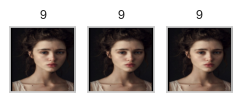
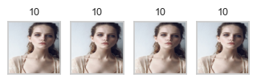
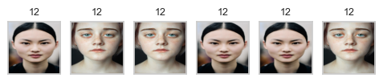
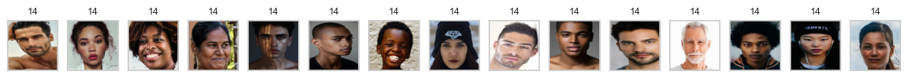
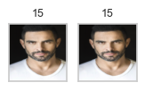
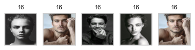
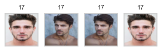
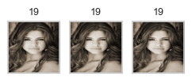
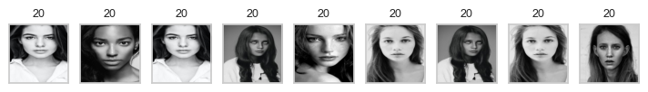
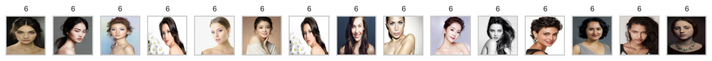
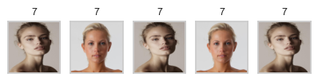
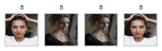
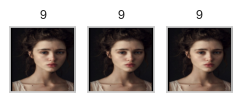
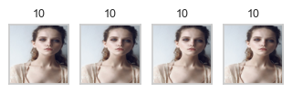
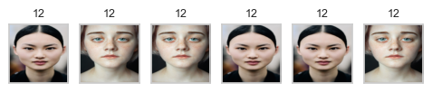
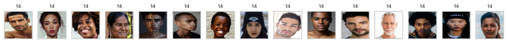
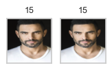
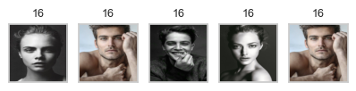
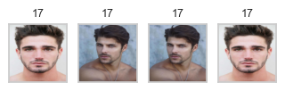
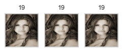
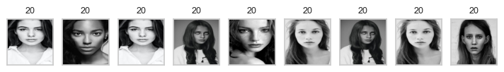
 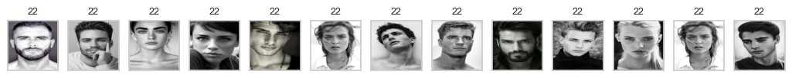
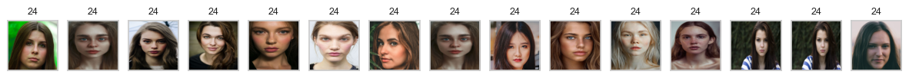
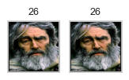
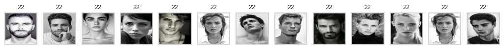
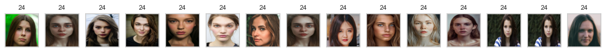
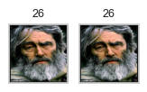
Some clusters correspond to people with distinct faces, age, facial expressions, hair colour and hair style, lighting and skin tone.